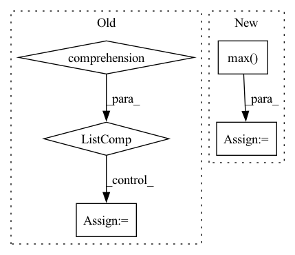

Pattern ID :30788
Before Change
weight_shape = [ctx.dims.spatial_mixing_kernel] * 2
max_dims = math.floor(math.log(ctx.dims.sequence, ctx.dims.spatial_mixing_kernel))
mask = jnp.triu(jnp.ones(weight_shape, dtype=ctx.model.computation_dtype)) if ctx.model.autoregressive else 1
weights = [get_param(ctx, f"mix_{i}", weight_shape, std=1, scale=ctx.dims.spatial_mixing_kernel ** -0.5)
for i in range(max_dims)]
if ctx.is_initializing:
return inp
inp = inp.reshape(ctx.dims.batch, -1, *[ctx.dims.spatial_mixing_kernel] * max_dims, ctx.dims.features)
original_dims = "".join(chr(ord("a") + i) for i in range(inp.ndim))
for i, wgt in enumerate(weights):
new_dims = original_dims[:i + 2] + "z" + original_dims[i + 3:]
reduced_dim = original_dims[i + 2]
if i > 0:
inp = activate(inp)After Change
original_shape = inp.shape
max_dims = math.floor(math.log(ctx.dims.sequence, ctx.dims.spatial_mixing_kernel))
batch = lax.max( ctx.dims.sequence // ctx.dims.spatial_mixing_kernel ** (depth % max_dims + 1), 1)
mask = jnp.logical_not(jnp.tri(ctx.dims.spatial_mixing_kernel, k=-1)) if ctx.model.autoregressive else 1
out = inp.reshape(ctx.dims.batch * batch, ctx.dims.spatial_mixing_kernel, -1, ctx.dims.features)
out = jnp.einsum("bkrf,kg,kg->bgrf", out, wgt0, mask)
out = activate(ctx, out)
out = jnp.einsum("bkrf,kg,kg->bgrf", out, wgt1, mask)
return out.reshape(original_shape)
In pattern: SUPERPATTERN
Frequency: 3
Non-data size: 5
Instances Fragment ID: 90710408
Project Name: homebrewnlp/homebrewnlp-jax
Commit Name: acfb8d5fbb1ba8f6b7830832f913663e426b9d09
Time: 2022-09-01
Author: 39779310+ClashLuke@users.noreply.github.com
File Name: src/model/mixer.py
M Class Name: AnonimousClass
N Class Name: AnonimousClass
M Method Name: mix(3)
N Method Name: mix(2)
M Parent Class:
N Parent Class:
M File Name: src/model/mixer.py
N File Name: src/model/mixer.py
M Start Line: 14
M End Line: 32
N Start Line: 13
N End Line: 29
Before Change
torch.empty(*shape, dtype=torch.float32, requires_grad=False)
for _ in range(5)
]
dace_inputs = [
torch.empty(*shape, dtype=torch.float32, requires_grad=False)
for _ in range(5)
]
pytorch_outputs = []
for inp, inp_src in zip(pytorch_inputs, input_values):
inp.copy_(inp_src)
inp.requires_grad = True
s = module(inp).sum()
s.backward()
pytorch_outputs.append(inp.grad)
print(pytorch_outputs[-1])
dace_module = DaceModule(module, backward=True)
dace_outputs = []
for inp, inp_src in zip(dace_inputs, input_values):
inp.copy_(inp_src)
inp.requires_grad = True
s = dace_module(inp).sum()
s.backward()
dace_outputs.append(inp.grad.clone().detach())After Change
dace_input.requires_grad = True
if use_max:
s = module(pytorch_input).max()
else:
s = module(pytorch_input).sum()
s.backward()
Fragment ID: 90710414
Project Name: spcl/daceml
Commit Name: 682aea4a22edc4a5268188596bcf443bd041a0a7
Time: 2021-03-01
Author: oliverrausch99@gmail.com
File Name: tests/autodiff/pytorch/test_pytorch.py
M Class Name: AnonimousClass
N Class Name: AnonimousClass
M Method Name: run_pytorch_module(3)
N Method Name: run_pytorch_module(2)
M Parent Class:
N Parent Class:
M File Name: tests/autodiff/pytorch/test_pytorch.py
N File Name: tests/autodiff/pytorch/test_pytorch.py
M Start Line: 13
M End Line: 45
N Start Line: 10
N End Line: 44
Before Change
)
// Pad examples to have same length.
max_length = max([len(t) for t in asr_tokens] )
if max_length == 0:
max_length = 1 // The ASR may output empty transcripts.
for t in asr_tokens:
t += [0] * (max_length - len(t))
asr_tokens = torch.tensor([t for t in asr_tokens])After Change
// Pad examples to have same length.
// Manage length of predicted tokens
asr_tokens_lens = torch.tensor([max(len(t), 1) for t in asr_tokens])
max_length = asr_tokens_lens.max() .item()
for t in asr_tokens:
t += [0] * (max_length - len(t))
asr_tokens = torch.tensor([t for t in asr_tokens]) Fragment ID: 90710418
Project Name: speechbrain/speechbrain
Commit Name: 31429ba76a94ea5481408307f5272c6b15034fc4
Time: 2021-01-18
Author: loren.lugosch@gmail.com
File Name: recipes/timers-and-such/multistage/train/train.py
M Class Name: SLU
N Class Name: SLU
M Method Name: compute_forward(3)
N Method Name: compute_forward(3)
M Parent Class: sb.Brain
N Parent Class: sb.Brain
M File Name: recipes/timers-and-such/multistage/train/train.py
N File Name: recipes/timers-and-such/multistage/train/train.py
M Start Line: 54
M End Line: 64
N Start Line: 55
N End Line: 61